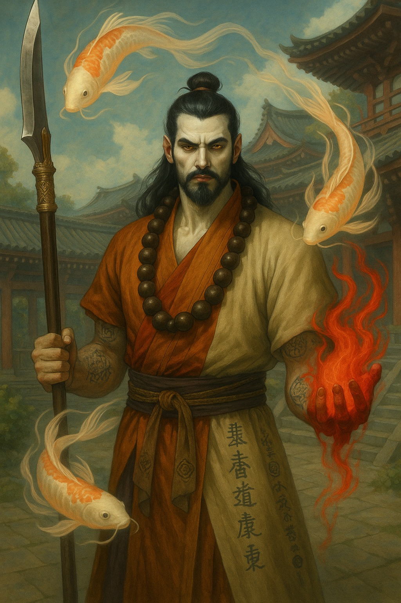
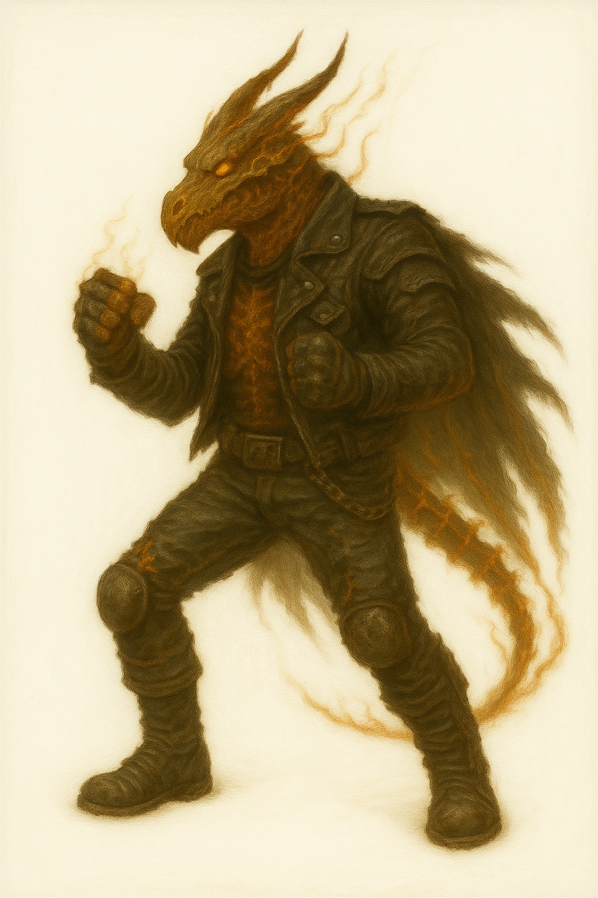

📜 Ficha de Personagem – Elarion Ryuzen
🌟 Atributos
🌙 Origem
Nascido sob a lua rubra de Varmah, marcado pela melancolia dos Sanguires.
Herdeiro de um fardo ancestral, reflexo do legado horrendo de Warpinier, o criador dos Sanguires.
As artes ocultas se apresentaram como caminho natural, moldadas pelo sangue e pelo vitae em suas veias.
🏯 O Exílio e o Despertar
Durante o exílio, encontrou em Sodori as tradições monásticas Koi.
Aprendeu disciplina, renúncia e transcendência.
A Wol-Do se tornou sua lembrança do rio: sereno na superfície, voraz na correnteza.
Após anos de disciplina, recebeu o nome Ryuzen – o Dragão Espiritual.
⚔️ O Vazio e o Juramento
A melancolia dos Sanguires persiste como cântico incessante.
Seu mestre, Kaien Hoshizora, declarou que havia dominado corpo, espírito e dança, mas ainda precisava enfrentar seu passado.
Banido do templo como libertação, não como punição.
Jurou libertar-se de seu legado por completo.
🔮 O Chamado do Destino
Convocado pela Corte da Queda para missões triviais, mas dois presságios se ergueram:
- Lago Esquecido de Tatsumari – águas que guardam reflexos de batalhas que ainda não aconteceram.
- Selo dos Nobres Sangue-de-Lua – uma marca ligada à sua linhagem.
Aceitou não pela promessa de poder, mas pela necessidade de nadar contra a corrente.
✨ A Lenda Atual
Caminha entre sombra e água — sanguire e koi, guerreiro e ocultista.
Sua Wol-Do não é apenas uma arma, mas a extensão de sua alma.
Cada golpe é uma dança de Sodori, uma oração gravada em lâmina.
Peregrino, Elarion ou Ryuzen — o que importa é a jornada rumo às águas altas onde carpas se tornam dragões.
📜 Ficha de Personagem – Ashfang, o Brigão
🌟 Atributos
🌙 Origem
Em vida, Ashfang era um draco andarilho, temido e conhecido apenas como o Brigão.
Vivia de cidade em cidade, sempre em movimento, carregando sua fúria nos punhos e viajando em sua motocicleta barulhenta e imponente.
Não buscava ouro nem glória: apenas o combate em si.
☠️ A Queda e o Retorno
Foi emboscado em uma estrada sem nome, morto e separado de sua moto lendária.
Retornou como um Retornado, com ossos imbuídos de fogo e raio e uma mente fragmentada.
Carrega uma maldição estranha: um distúrbio sobrenatural que o faz emitir involuntariamente o som de um motor acelerando — "Randandandandandan!"
O que antes era o rugido de sua moto agora ecoa como zombaria de sua própria memória perdida.
🔮 O Encontro com a Corte da Queda
Recebeu o chamado da Corte da Queda e, apesar de pouco interesse, dois sinais o moveram:
- A Estrada das Sete Chamas – um projeto que despertava ecos de sua vida passada de viajante.
- O Selo das Famílias Nobres – uma chance de enfrentar guerreiros poderosos escondidos atrás da política e do comércio.
Aceitou, talvez por instinto, talvez pelo pressentimento de que sua busca pessoal se entrelaçava ao destino daquela estrada.
✨ A Lenda Atual
Hoje, vaga pelas encostas geladas de Kagemori como um amaldiçoado Retornado.
Seu corpo emite brasas, trovões e o rugido involuntário do motor esquecido.
Sua presença é temida, seus punhos são respeitados e sua risada ecoa como trovão.
Para uns, uma aberração. Para outros, uma arma viva.
Para si mesmo, continua sendo apenas um lutador em busca da próxima batalha — e de um modo de silenciar o maldito som que ecoa de sua alma.